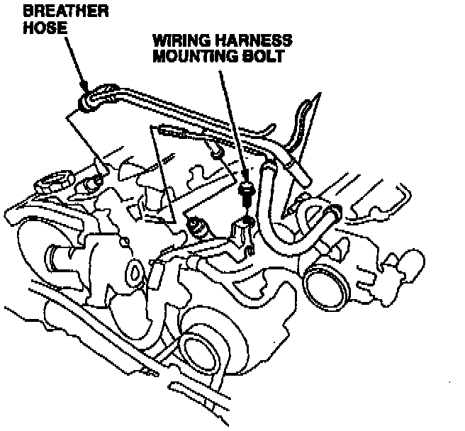
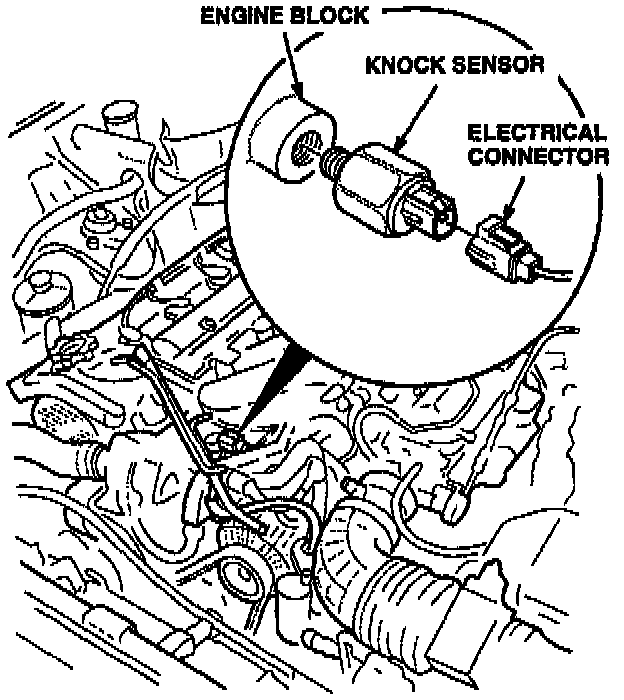
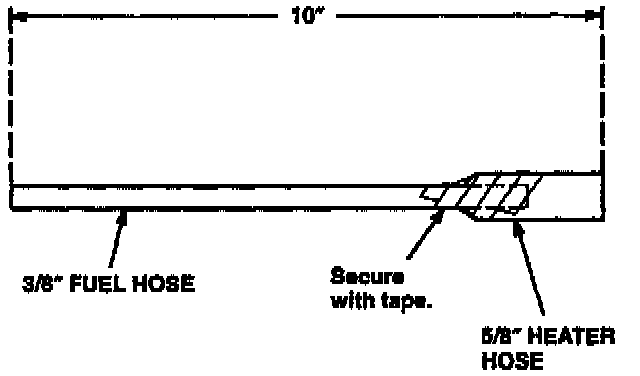
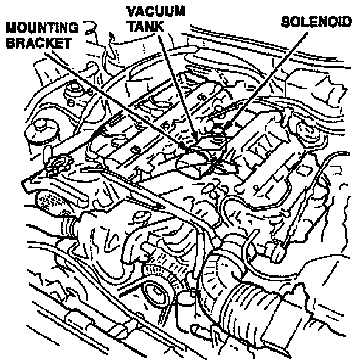
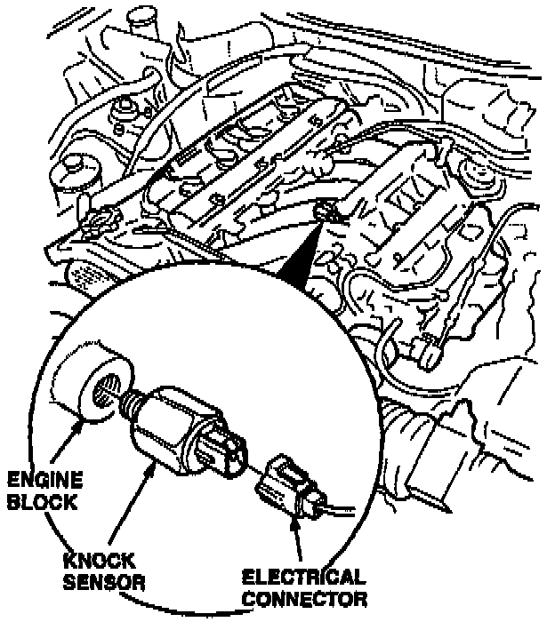

Procedure
Use the procedure below, and the flat rate times given, when replacing a knock sensor.Front Knock Sensor Replacement
1. Get the customer's anti-theft radio code. Write down the radio station presets.
2. Disconnect the battery negative terminal.

3. Remove the breather hose. Remove the wiring harness mounting bolt. Move the wiring harness out of the way.
4. Disconnect the electrical connector from the front knock sensor.
NOTE:
If you are not able to reach the electrical connector with your hand, use a pair of 11 inch needle nose pliers (Snap-On #9llCP or equivalent).

5. Use a 24 mm socket and a universal extension to remove the knock sensor.

6. Install the new knock sensor, tighten it to 34 N.m (3.4 kg-m, 25 lb-ft). Reconnect the electrical connector. If necessary, make up the tool shown below to use as an aid in threading the sensor into the hole.
7. Reinstall the wiring harness mounting bolt and the breather hose.
8. Reconnect the battery negative terminal.
9. Enter the radio anti-theft code and the customer's station presets. Reset the clock.
Rear Knock Sensor Replacement
1. Get the customer's anti-theft radio code. Write down the radio station presets.
2. Disconnect the battery negative terminal.

3. Locate the intake air bypass control solenoid underneath the rear of the intake manifold. Pull the solenoid and its vacuum tank loose from their mounting bracket
4. Position the solenoid and tank so you can see the rear knock sensor. Disconnect the electrical connector from the sensor; then remove the sensor with a 24 mm socket on a universal extension.

5. Install the new knock sensor and tighten it to 34 N.m (3.4 kgm, 25 lb.ft). Reconnect the electrial connector.
6. Reinstall the IAB solenoid and tank back on the bracket.
7. Reconnect the battery negative terminal.
8. Enter the radio anti-theft code and the customer's station presets. Reset the clock.